Výlety a procházky pro rodinu · chata Alfa, čp. 274
Trasy po turistických značkách. Většina začíná přímo u chaty. Klepni na trasu a rozbalí se mapa a popis cesty. V rozbalené trase je na mapě modré tlačítko 📍 Kde jsem?: ukáže, kde právě jste (GPS, i bez signálu).
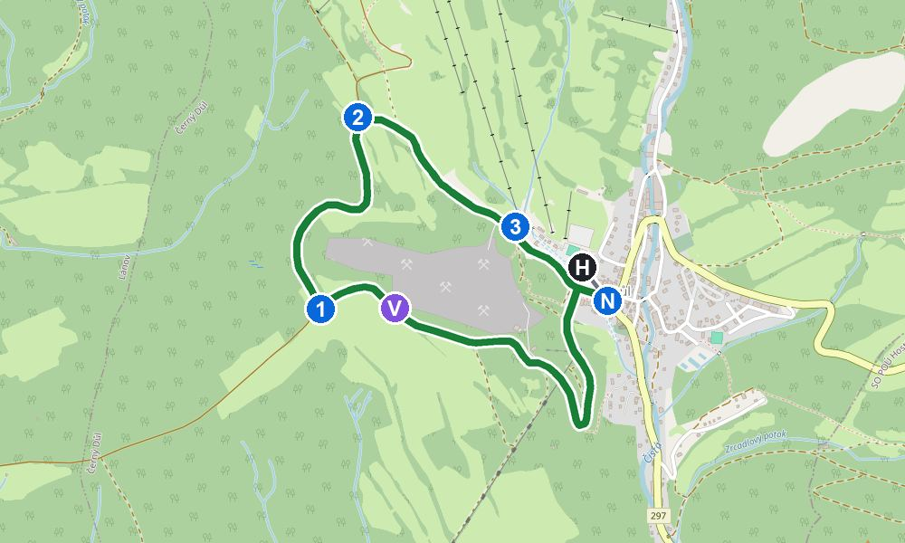
| H → N | Od chaty 140 m dolů na náměstí k rozcestníku Černý Důl (nám.). |
| N | Chytněte zelený roh. Ze začátku jde spolu se žlutou, po 100 m se od ní odpojí. Držte se zeleného rohu, vede z obce ven a kolem lomu. |
| V | Vyhlídka (1,4 km). Dobré místo na svačinu. |
| 1 | Rozcestník (1,7 km). Dál po zeleném rohu, mírně do kopce. |
| 2 | Rozcestník (2,6 km). Tady se k zelenému rohu přidá žlutá a obě vás vedou z kopce dolů k lanovkám. |
| 3 | Dolní stanice lanovek (3,3 km). Odtud je to pár kroků k chatě. |
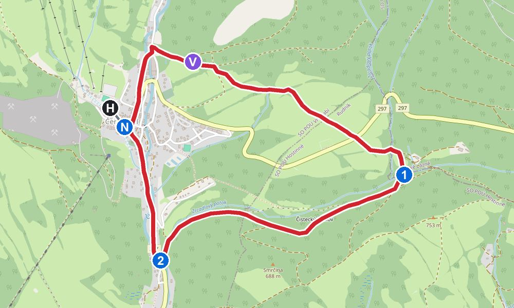
| H → N | Od chaty 140 m na náměstí k rozcestníku Černý Důl (nám.). |
| N | Chytněte červený roh. Prvních 800 m jde spolu se žlutou (prvních 500 m i s modrou) přes náměstí, pak se oddělí a stoupá nad obec. |
| V | Vyhlídka (0,8 km). |
| 1 | Po červeném rohu stráněmi na východ až k silnici na Janské Lázně (asi 2,4 km). Tady se trasa stáčí zpátky na západ. |
| 2 | Rozcestník pod obcí (4,1 km). Dál po červeném rohu spolu s modrou podél silnice zpátky na náměstí. |
| N → H | Z náměstí 140 m k chatě (celkem 5,2 km). |
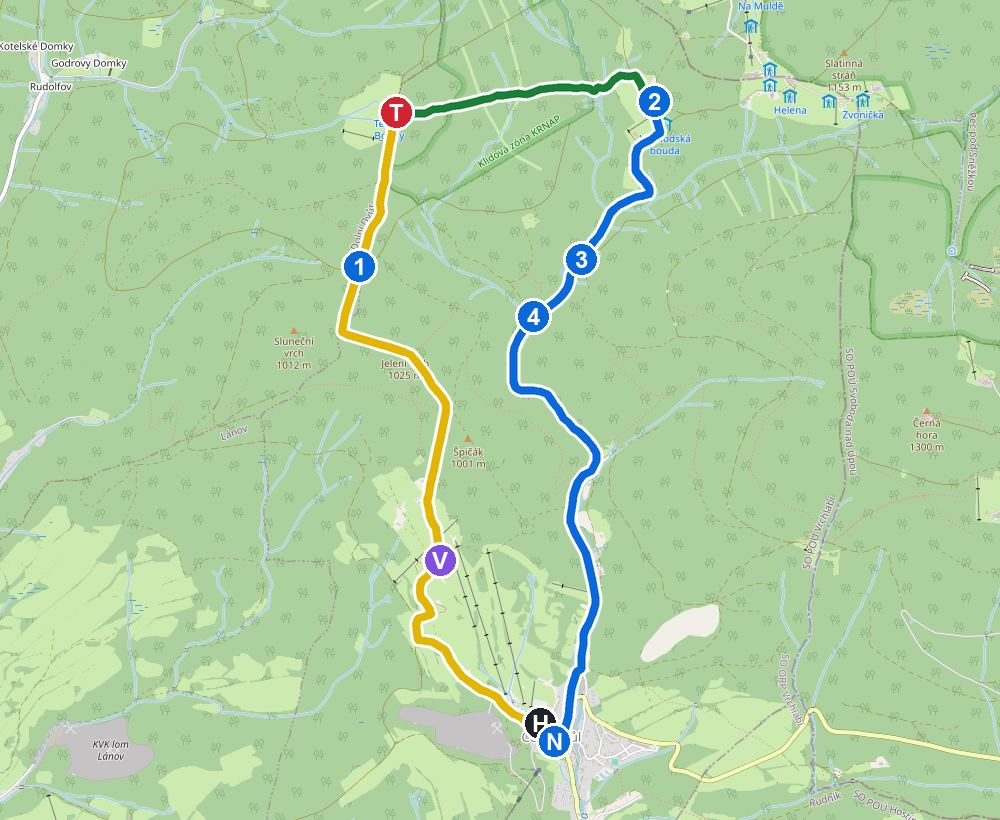
| H | Žlutá vede asi 60 m od chaty. Jděte po žluté k lanovkám a dál do kopce podél sjezdovky. |
| V | Vyhlídka Bönischovy boudy (asi 1,5 km) s výhledem do údolí. |
| 1 | Rozcestník Rejdiště, 990 m n. m. (3,7 km). Dál po žluté. |
| T | Tetřeví Boudy, 1 032 m n. m. (4,7 km). Hotel s restaurací, oběd. Pak přejděte na zelenou směr Hrnčířské boudy. |
| 2 | Hrnčířské boudy, 1 070 m n. m. (6,4 km), nejvyšší bod. Přejděte na modrou směr Černý Důl. |
| 3 | Údolí Čisté (rozc.), 910 m n. m. (7,7 km). Stále po modré dolů údolím. |
| 4 | Údolí Čisté (8,2 km). Po modré údolím až do Černého Dolu na náměstí (11,3 km), pak 140 m k chatě. |
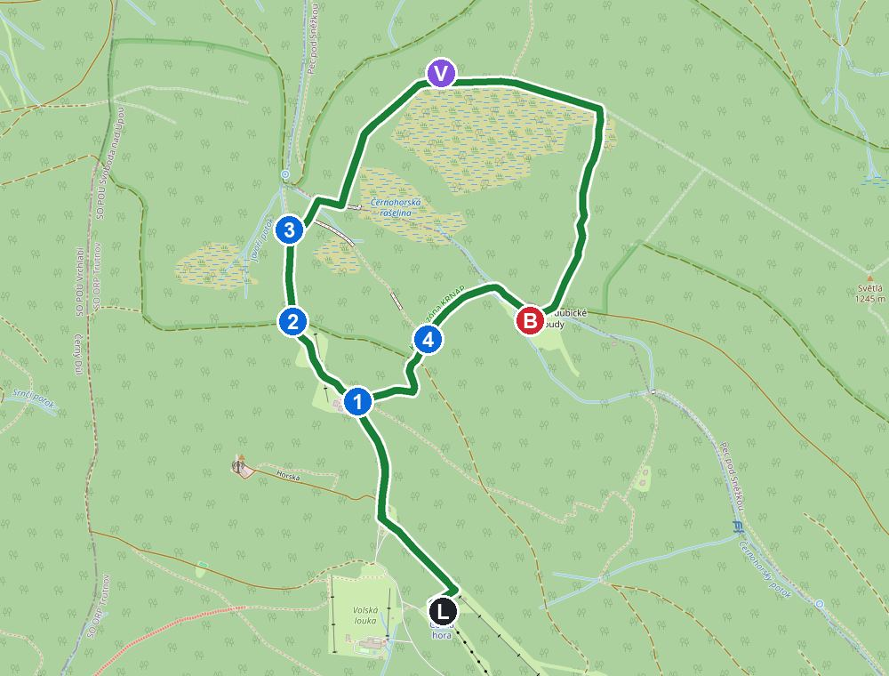
| L | Z horní stanice lanovky po žluté k hotelu Černá bouda (0,9 km). U ní je vyhlídka Hledisko a bistro. |
| 1 | Tady chytněte naučnou stezku Černohorské rašeliniště (zelená šikmá) a jděte po ní přes Pod Černou boudou (1,2 km) a Václavák (1,5 km). |
| V | Po dřevěných chodnících přes rašeliniště k Hubertově vyhlídce (2,4 km). |
| B | Dál po naučné stezce k Velkým Pardubickým boudám (3,8 km), kde je restaurace. |
| 4 | Po zelené k rozcestí Nad Pardubickými boudami (4,2 km), pak po modré k Černé boudě a po žluté zpět k lanovce (5,5 km). |
| Lanovka zpáteční: 2× 380 + 2× 240 (online) | 1 240 Kč |
| Na pokladně: 2× 440 + 2× 280 | 1 440 Kč |
| Parkoviště P1 u dolní stanice, celý den | 130 Kč |
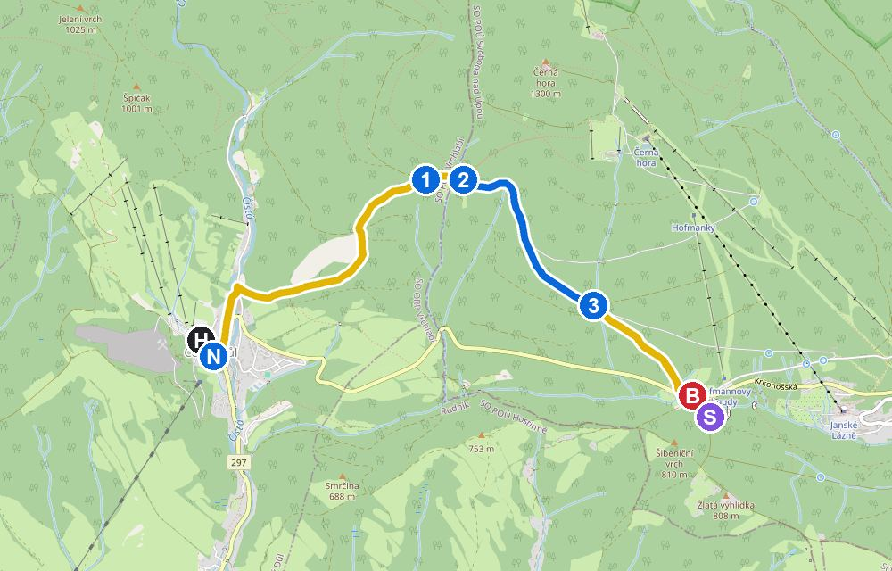
| N | Z náměstí po žluté do kopce. Hned na začátku je to nejprudší, 400 m výškových na 2,3 km. |
| 1 | Rozcestník Vendlovka, 1 000 m n. m. (2,5 km), nejvyšší bod. Dál po žluté. |
| 2 | U Zrcadlových bud (2,7 km): přejděte na modrou dolů. |
| 3 | Nad Hoffmannovou boudou (4,1 km): přejděte na žlutou. |
| B | Hoffmannova bouda (5,1 km), 788 m n. m. Restaurace, kousek dál Stezka korunami stromů. |
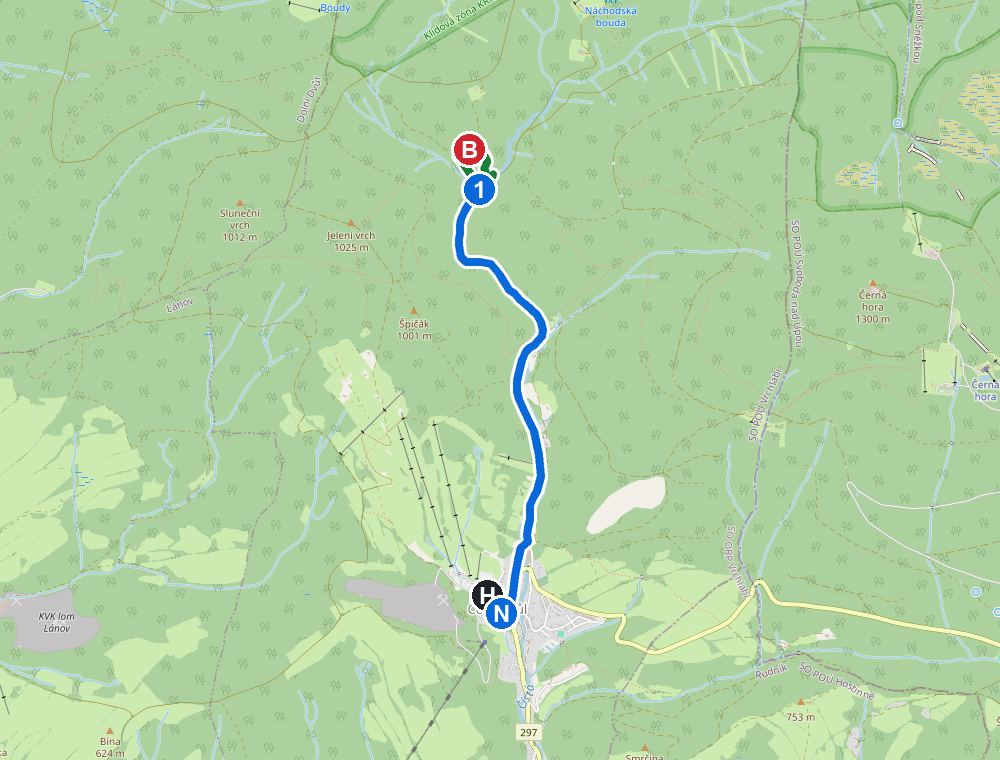
| N | Z náměstí po modré na sever údolím, pořád mírně do kopce. |
| 1 | Rozcestník Údolí Čisté (3,2 km od chaty). |
| B | Okruh naučné stezky Berghaus (0,9 km) se zelenou šikmou značkou, pak zpět k rozcestníku. |
| 1 → N | Stejnou cestou po modré dolů do Černého Dolu (celkem 7,2 km). |
Celodenní výlety autem. Co je otevřené právě dnes, ukazuje záložka ☀️ Dnes.
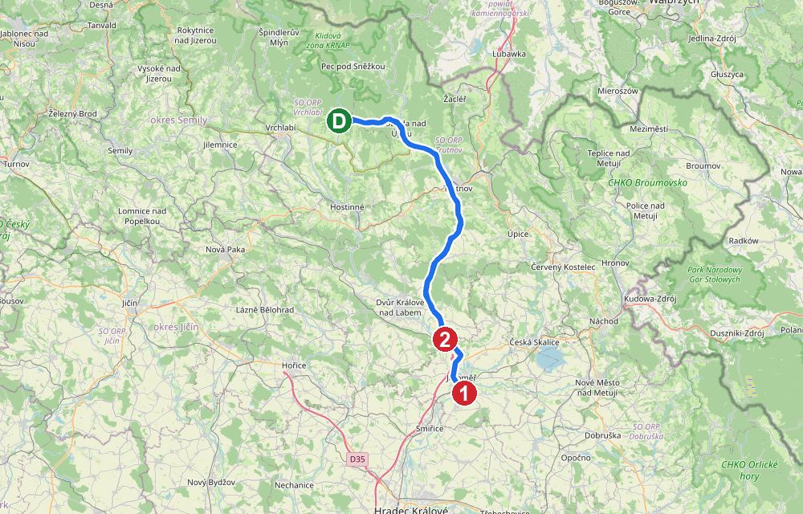
| 8:00 | Odjezd z Černého Dolu (49,5 km, cca 56 min) |
| 9:00 | Josefov – podzemí Bastionu I. Prohlídka s průvodcem chodbami. Otevřeno 9–12 a 13–17, poslední prohlídka v 16:00. |
| 10:30 | Přejezd do Kuksu (9 km, cca 14 min). Parkoviště u hospitálu. |
| 10:45 | Pěšky k Braunovu Betlému: 3,3 km po žluté a červené, tam a zpět 6,6 km, s dětmi asi 2,5 h. Sochy vytesané do skály, vstup zdarma. Svačinu s sebou. |
| 13:15 | Oběd v Kuksu |
| 14:30 | Hospital Kuks, základní okruh (60 min): barokní lékárna, sochy ctností a neřestí. Časy prohlídek ověř na pokladně. |
| 15:45 | Domů (44 km, cca 51 min), v Černém Dole cca 16:40. Slunce zapadá v 16:36. |
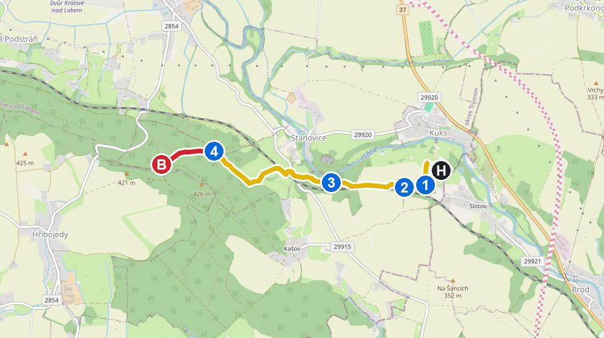
| H | Od hospitálu dojděte dolů k rozcestníku Kuks (odb.), je to asi 250 m. |
| 1 | Tady se napojte na žlutou. Spolu s ní vede i naučná stezka Půjdem spolu do Betléma (zelený roh). |
| 2 | Po žluté kolem zastávky Kuks (vlak) (0,4 km). |
| 3 | Dál po žluté přes rozcestník Svatý František (1,2 km). |
| 4 | Na rozcestí Pod Betlémem (2,7 km) přejděte na červenou a jděte po ní do kopce. |
| B | Betlém (Braunovy sochy) (3,3 km). Zpátky jděte stejnou cestou: po červené k rozcestí Pod Betlémem a pak po žluté do Kuksu. |
| Josefov podzemí – rodinné (2+2) | 350 Kč |
| Hospital Kuks – 2× dosp. 220 + 2× dítě 70 | 580 Kč |
| Braunův Betlém | zdarma |
| Celkem | 930 Kč |
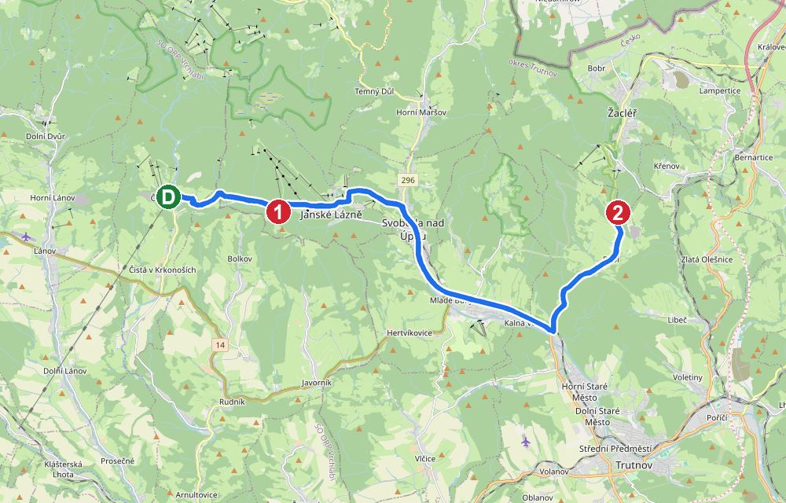
| 9:20 | Odjezd (4 km, 7 min) |
| 9:30 | Stezka korunami stromů: lávka v korunách a 45m věž, s tobogánem dolů (od 120 cm, příplatek). Nově (od dubna 2026) je u ní i Medvědí stezka se skutečnými medvědy Michalem a Alicí. Jestli je v ceně a jestli medvědi na podzim nespí, web neuvádí. Počítej 1,5–2 h. |
| 11:30 | Oběd (restaurace u stezky nebo cestou v Trutnově) |
| 12:30 | Přejezd na Stachelberg (17 km, cca 21 min) |
| 13:00 | Dělostřelecká tvrz Stachelberg: muzeum opevnění a podzemí tvrze. |
| 14:45 | Rozhledna Eliška a bunkry: 2,6 km tam a zpět, cca 45 min. Kolem jsou desítky malých bunkrů (řopíků). |
| 15:45 | Domů (21 km, cca 25 min), v Černém Dole cca 16:15, ještě za světla. |
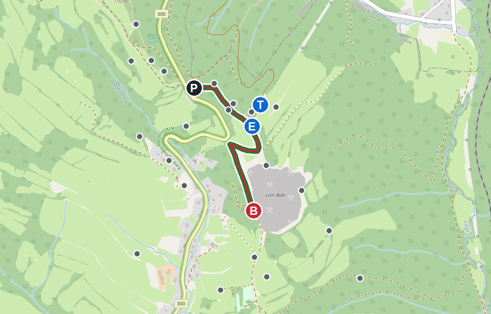
| P | Od parkoviště a rozcestníku Babí – Stachelberg jděte po červené. Ve stejném směru vede i zelená a naučná stezka Opevněné Trutnovsko. |
| E | Po 0,5 km dojdete k rozcestí Stachelberg – pevnost. Stojí tu rozhledna Eliška (24,5 m, vyhlídkové plošiny ve 9 a 21 m) ve tvaru vojenské pozorovatelny. |
| B | Pokračujte dál po červené a zelené z kopce k lomu Babí (0,8 km), cestou míjíte bunkry. U lomu se otočte a vraťte se stejnou cestou. |
| Stezka korunami – rodinné 2+1 (1 150) + 2. dítě (200) | 1 350 Kč |
| Stachelberg – rodinné (2+2) | 500 Kč |
| Tobogán (dobrovolné, od 120 cm) | +50 Kč/os. |
| Celkem bez tobogánu | 1 850 Kč |
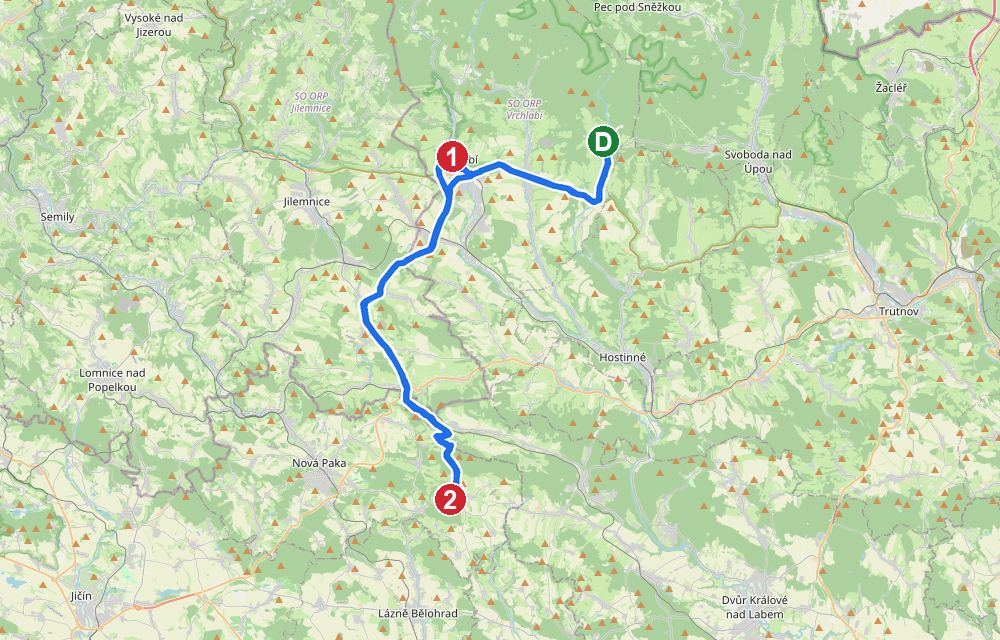
| 9:00 | Odjezd do Vrchlabí (11,6 km, cca 16 min) |
| 9:20 | Muzeum Krkonoš: příroda a historie hor, interaktivní expozice. Počítej 1,5 h. |
| 10:50 | Zámecký park: procházka kolem zámku, zdarma. Uvnitř zámku je radnice, prohlídky nejsou. |
| 11:30 | Přejezd na Pecku (23,5 km, cca 31 min), oběd v obci Pecka |
| 13:00 | Hrad Pecka: celá prohlídka (cca 60 min), historický okruh A a Harantovské sklepy B. Otevřeno do 16:00. |
| 14:30 | Procházka kolem hradu a domů (32 km, cca 43 min), v Černém Dole cca 15:45 |
| Muzeum Krkonoš – rodinné (cena z r. 2023, ověř) | 400 Kč |
| Hrad Pecka – rodinné, celá prohlídka | 350 Kč |
| Celkem | 750 Kč |
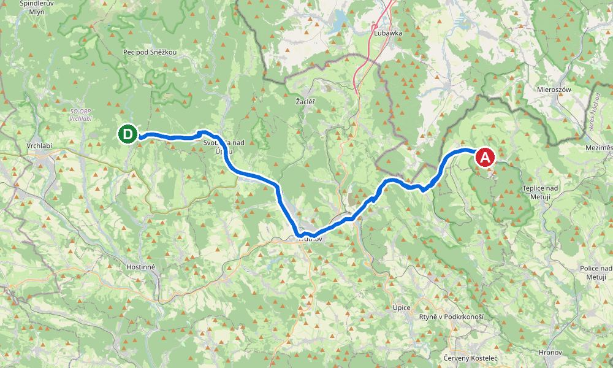
| 8:30 | Odjezd (41 km, cca 50 min). |
| 9:30 | Skalní město: okruh po zelené 3,5 km, asi 2,5 h. Prvních 1,3 km k Malému vodopádu je po rovině, pak skalní labyrint, Gotická branka a Velký vodopád. Na celém okruhu je skoro 2 000 schodů. |
| 11:00 | Lodička po Skalním jezírku (asi 20 min, do 31. 10., 9:00–15:45, jen hotově). |
| 13:00 | Oběd v Adršpachu a cesta domů. |
| Rodinné 2+2 online předem (na místě 640) | 490 Kč |
| Parkoviště online (na místě 220) | 180 Kč |
| Lodička 2× 100 + 2× 50 (jen do 31. 10.) | 300 Kč |
| Celkem bez lodičky | 670 Kč |
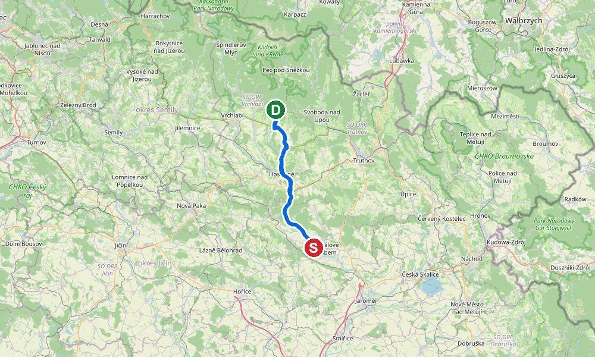
| Rodinné zimní (470 + 2× 155), jen na pokladně | 780 Kč |
| Safaribus 4× 70 (dobrovolné) | +280 Kč |
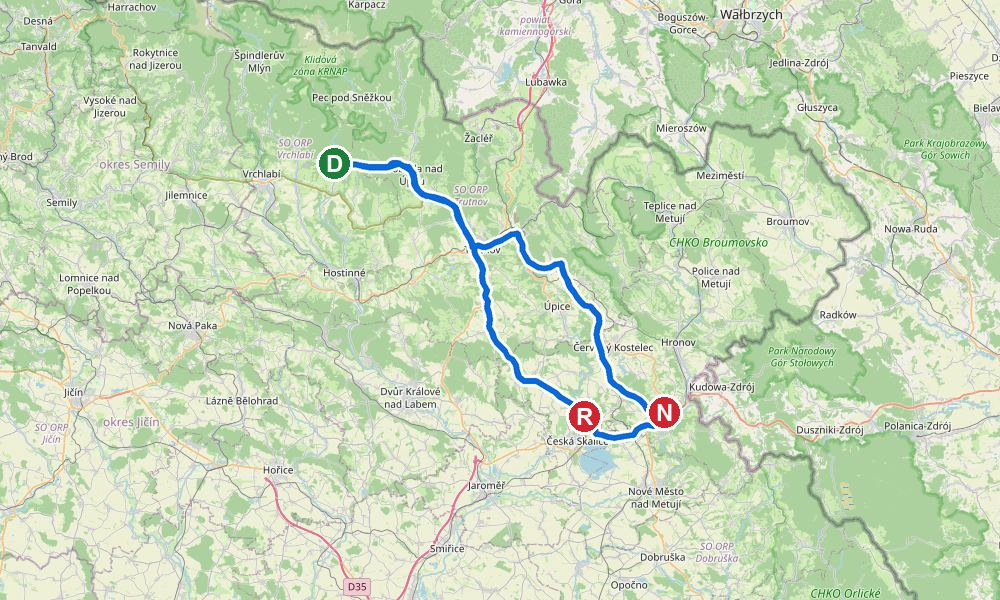
| 9:00 | Odjezd (54 km, cca 70 min). Parkoviště před zámeckým parkem. |
| 10:15 | Zámek Ratibořice, okruh 1 (30 min). |
| 11:00 | Procházka Babiččiným údolím podél Úpy: Rudrův mlýn (prohlídka 30 min), Viktorčin splav, Staré bělidlo (zdarma). Počítej 2–3 h. |
| 14:00 | Volitelně zámek Náchod (11 km): do 1. 11. prohlídka „ze sklepení na věž“, 10–15. Medvědi v příkopu už nejsou (chov skončil 2025). |
| Zámek Ratibořice, okruh 1: 2× 180 + 2× 50 | 460 Kč |
| Rudrův mlýn 4× 80 | 320 Kč |
| Staré bělidlo | zdarma |
| Náchod, sklepení a věž: 2× 100 + 2× 30 (volitelně) | 260 Kč |
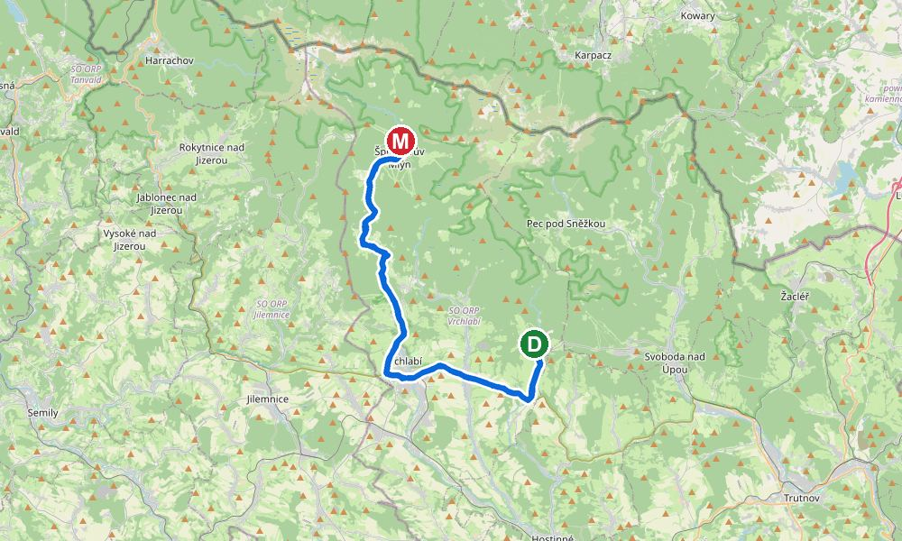
| 1 | Zaparkujte na P3 u dolní stanice lanovky Medvědín. |
| 2 | Lanovkou nahoru na Medvědín (1 235 m). U lanovky si vezměte mapu s tužkou a úkoly. |
| 3 | Pěšky z kopce zpět do údolí: 8,6 km a 7 zastavení s dřevěnými medvědy. Nahoře je hřiště. |
Jídlo, obchody, pomoc a tipy do deště. Otevírací doby jsou z webu (hlavně firmy.cz), mimo sezónu se mění. Čísla se dají vytočit klepnutím.
| Tísňová linka | 112 |
| Záchranka | 155 |
| Horská služba (nonstop) | 1210 |
| Horská služba – dispečink | 602 448 338 |
| Horská služba – stanice Černý Důl | 721 488 470 |